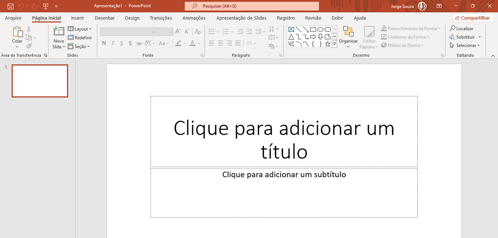

O Powerpoint é um software do suíte de aplicativos do Office utilizado para criar apresentações de slides, que são animações compostas de gráficos, texto, sons, vídeos e outros elementos.
Assim como no Word e outros aplicativos do pacote Office, acima do Espaço de Trabalho temos a Faixa de Opções onde podemos encontrar os recursos de cada menu.
No Espaço de Trabalho temos o slide atual e ao lado, a Barra de Slides. Na Barra de Slides podemos adicionar novos slides apenas pressionando Enter e excluí-los apenas pressionando Delete.
Veremos neste capítulo os recursos essenciais do Powerpoint para que você seja capaz de começar a fazer suas próprias apresentações de maneira profissional.
Podemos adicionar e remover slides com as teclas Enter e Delete, mas podemos executar estas mesmas operações clicando sobre um slide na barra de slides.
É possível ainda duplicar um slide selecionado.
Para selecionar vários slides basta que cliquemos sobre eles com a tecla Shift pressionada.
Para alterar a ordem dos slides apresentada na barra, bastar selecionarmos um ou mais slides e arrastar para a posição desejada.
Apesar de podermos inserir as caixas de texto manualmente, cada slide vem com suas próprias caixas padrão, além disso, o primeiro slide vem com um layout de capa e os restantes, de conteúdo.
Para alterar o layout de um slide basta clicarmos com o botão direito sobre ele e selecionar a opção Layout.
1. Com o Powerpoint aberto, salve o arquivo em sua pasta com o nome “Curiosidades sobre o café”.
2. Em seguida, clique com o botão direito do mouse sobre o slide na Barra de Slides, navegue até a opção Layout, e selecione “Somente título”. Agora o slide deve possuir apenas uma caixa de texto.
Clique dentro da caixa de texto e digite: “Os fatos curiosos sobre o café”
1. Pronto, já temos nossa capa.
2. Agora clique no slide 1 na Barra de Slides e pressione Enter para inserir o segundo.
3. Antes de começarmos a criar nossos slides, vamos configurar algumas coisas.
1. Clique no menu Design.
2. Você verá dois conjuntos, o conjunto de temas e o conjunto de variantes. Selecione um tema e uma variante do tema ao seu gosto. Lembre-se que é possível ainda editar as fontes e o plano de fundo como quisermos.
3. Clique no botão “Tamanho do Slide”, logo depois das variantes, e selecione “Tamanho Personalizado”. Na caixa de diálogo que se abrirá, clique em “Slides dimensionados para:” e selecione A4, pois assim poderemos exportar para pdf e imprimir. Clique em Ok.
Se o objetivo da apresentação é montar um vídeo ou apresentar numa TV, o ideal é um tamanho WideScreen.
1. Ao lado do botão Tamanho do Slide, clique no botão Formatar Tela de Fundo.
2. Na barra lateral que se abrirá, experimente algumas alterações, podemos definir o fundo com uma cor sólida personalizada, com uma combinação de cores gradiente, ou até mesmo com texturas ou uma imagem.
3. Caso não goste das alterações, na parte inferior da barra, você pode clicar em Redefinir Plano de Fundo, ou se desejar aplicar as alterações que fez aos outros slides pode clicar em Aplicar a Tudo.
1. A partir de agora começaremos a montar o conteúdo da nossa apresentação. Clique com o botão direito do mouse sobre o segundo slide e selecione, Layout, em seguida escolha Em Branco.
2. Clique no menu Inserir, e procure pela opção Caixa de Texto, e clique.
3. Clique e arraste criando uma caixa de texto um pouco menor que o slide, em seguida digite o seguinte texto:
O café é uma das bebidas mais consumidas do mundo, só fica atrás da água. Pensando nisso, seguem alguns fatos curiosos sobre essa bebida tão apreciada.
4. A partir de agora formataremos nossa caixa de texto. Clique com o botão direito do mouse sobre ela e selecione Formatar Forma.
5. Na barra lateral que se abriu veja que temos Opções de Forma e Opções de Texto, selecione Opções de Forma caso não esteja selecionado. Em Opções de Forma, temos três opções, Preenchimento, Efeitos e Propriedades.
6. Em Preenchimentos escolha Preenchimento gradiente. Se preferir pode personalizar o gradiente ao seu gosto.
7. Em Efeitos clique em Sombra, e nas Predefinições escolha uma sombra Externa.
8. Em Tamanho, defina a Altura como 10cm e a Largura como 20cm.
9. Agora clique nas Opções de Texto, e selecione a terceira opção, Caixa de Texto.
10. Marque a opção “Não ajustar automaticamente”.
11. Em seguida, em “Alinhamento vertical” escolha “No meio”.
Podemos organizar objetos como caixas de texto e formas clicando e arrastando, o Powerpoint tende a alinhar estes objetos à página, seja no centro ou nos cantos, mas para garantir maior precisão, podemos usar a opção “Organizar”, que inclui ainda recursos para definir qual objeto fica por cima do outro ou para agrupar e desagrupar vários objetos.
1. No meu Página Inicial procure pela opção “Organizar”, na faixa de opções.
2. Com a caixa de texto selecionada clique na opção Organizar, selecione Alinhar, em seguida clique em Centralizar.
3. Repita o processo, mas dessa vez, ao invés de Centralizar escolha “Alinhar ao meio”.
4. Agora vamos formatar o texto. Selecione todo o texto dentro da caixa de texto e, na faixa de opções, formate-o como Garamond 25 negrito, com uma cor verde-escuro.
Nosso slide está agora perfeitamente configurado. Conforme pegar a prática nestes processos simples, você os fará tão rápido que nem perceberá.
Para criar novos slides com a mesma configuração não precisamos repetir todo o processo. Basta que clique com o botão direito do mouse sobre o slide na Barra de Slides e selecione Duplicar. Lembre-se sempre de duplicar cada vez o último slide para que todos fiquem em ordem.
Depois de duplicar o slide, basta alterar o texto das caixas de texto de cada slide conforme indicado abaixo:
Se você se atrapalhar em alguma parte da edição lembre-se do Control+Z que lhe permite desfazer uma ação. Você pode duplicar um slide facilmente com o atalho Control+D.
Slide 3:
Ele tem sua origem na Etiópia, hoje o 5º país que mais produz café no mundo. Lá também surgiu em forma de suco fermentado, que se transforma em uma bebida alcoólica.
Slide 4:
O maior produtor do planeta é o Brasil. Assim sendo, aproximadamente 25% de toda produção mundial está aqui. A saber, chegou aqui no século XVIII.
Slide 5:
O cultivo do café é possível em países quentes da América, África e da Ásia.
Slide 6:
Apenas o petróleo é o produto mais comercializado do que o café no mundo.
Slide 7:
Há estudos que mostram que consumi-lo pode retardar sintomas de Alzheimer.
Slide 8:
O composto químico do café e o nível natural de adenosina, ou seja, uma substância que regula a função cerebral, são bastante similares.
Slide 9:
Quanto mais café tomamos, mais adenosina o cérebro produz, o que explica que pode causar dependência.
Slide 10:
A cafeína começa a causar efeito após 10 minutos, no entanto em 45 minutos alcança seu nível máximo. Isso depende de como é absorvida pelo organismo.
Slide 11:
Algumas espécies de flores também possuem cafeína, o que atrai as abelhas e pode melhorar sua memória.
Slide 12:
Além da cafeína, o café também possui antioxidantes. Contudo, esses antioxidantes protegem o organismo de radicais livres, ou seja, das moléculas que causam problemas cardíacos e envelhecimento.
Slide 13:
A prática de pagar um café surgiu na Itália, a saber, quando Nápoles pagava para futuros clientes que não tinham condições de pagar pela bebida. Contudo, hoje é comum em diversos países do mundo.
Slide 14:
Fonte: Fatos e Curiosidades
Uma das últimas coisas que faremos antes de entrar na magia da animação dos slides é inserir uma imagem e uma música de fundo.
A imagem vamos inserir no primeiro slide, então clique nele.
Entre no site pixabay.com e procure por café, ou coffee, escolha uma imagem de sua preferência e faça o download, em seguida retorne ao Powerpoint.
1. Clique no menu Inserir, selecione Imagem e clique em Este Dispositivo. Navegue até a pasta onde salvou a imagem e selecione.
2. Antes de clicar em Inserir, faremos algo diferente para que entenda um dos conceitos do Office.
3. Com a imagem selecionada, clique na setinha ao lado do nome Inserir e escolha “Vincular ao arquivo”.
Quando inserimos uma imagem, uma cópia dela é feita dentro do aplicativo do Office, seja o Powerpoint, o Word, ou outro. Caso você delete a imagem original da pasta, nada acontece com a que está inserida em seu documento. No entanto quanto mais imagens inseridas, maior será o tamanho do documento.
Quando utilizamos a opção vincular, o tamanho do arquivo não muda, pois é apenas um caminho para a imagem na pasta, se a original for deletada, a do documento será também. No entanto, isso permite que você faça alterações na imagem original de forma que seja atualizada dentro do arquivo.
1. A imagem certamente se inseriu cobrindo o título. Clique no menu Página Inicial, procure por Organizar, e dessa vez selecione Enviar para Trás.
2. Agora clique com o botão direito sobre a imagem e escolha Tamanho e Posição. Defina a largura como 20cm. A altura será definida automaticamente pela proporção.
3. Novamente clique em Organizar, escolha Alinhar, e escolha Centralizar. Repita o processo, mas desta vez escolha Alinhar Parte Inferior.
4. Salve o arquivo.
Vamos agora colocar uma música de fundo em nossa apresentação. Par
1. Com o primeiro slide selecionado, clique no menu Inserir, procure por Áudio e clique, selecione Áudio em meu PC.
2. Para que o arquivo não fique muito grande, use a opção Vincular ao arquivo, para inserir. Lembre-se de não apagar o arquivo de áudio original ou movê-lo de pasta. Caso você não tenha nenhum áudio para inserir pode baixar um gratuitamente na Biblioteca de Áudio do Youtube (youtube.com/audiolibrary).
3. Posicione o ícone do áudio num dos cantos do slide, se quiser pode até diminuí-lo de tamanho.
4. Agora que inserimos a música de fundo, vamos configurar sua reprodução.
5. Com o ícone do áudio selecionado, clique no menu Reprodução.
6. Procure pelo botão Volume, e selecione como Médio.
7. Ao lado do botão de volume marque as duas caixas “Executar entre slides” e “Repetir até parar”. Isso fará com que a música toque em todos os slides continuamente.
8. Acimas das caixas que você marcou, selecione Iniciar: Automaticamente. Isso fará a música tocar assim que a apresentação de slides iniciar.
9. E logo ao lado, marque a caixa “Ocultar durante a apresentação”, isso fará com que o ícone do áudio não fique visível.
10. Salve o arquivo.
Pronto! Configuramos a música de fundo de nossa apresentação. E podemos ir direto para a parte mágica!
As animações podem ser aplicadas a elementos individuais como formas, caixas de texto ou imagens. Os slides também possuem animações durante a transição. Vamos aplicar uma animação à imagem do café no primeiro slide.
Selecione a imagem do primeiro slide e clique no menu Animações.
Você pode escolher uma animação simples dentre as opções ou pode criar combinações clicando em Adicionar Animação.
É possível definir uma animação de entrada para quando o objeto surgir, outra de ênfase e outra de saída para quando o objeto desaparecer.
1. Clique em Adicionar animação e escolha uma animação de entrada.
2. Clique novamente em Adicionar animação e escolha uma animação de ênfase.
3. Clique novamente em Adicionar animação e escolha uma animação de saída.
As animações acontecem na ordem em que são adicionadas e não podem ultrapassar a duração do slide.
4. Salve o arquivo.
Por padrão o Powerpoint passa de um slide a outro ao clicarmos com o mouse, isso nos permite, durante uma apresentação a alguém, comentar sobre o conteúdo do slide, mas é possível configurar para que os slides passem durante determinado tempo.
1. Clique em Transições.
2. Escolha uma animação para a transição no conjunto “Transição para este slide”. A duração da transição é padrão.
3. Em Avançar slide, no lado direito da faixa de opções, desmarque a opção “Ao clicar com o mouse”, marque a opção “Após” e defina como 00:10,00, o que é 10 segundos para cada slide, basta digitar 10 e pressionar Enter.
4. Todas estas configurações ficam sendo válidas apenas ao slide atual, pois é possível configurar cada slide de forma diferente. Para aplicar à toda a apresentação clique no botão “Aplicar a todos”.
5. Está pronta nossa apresentação. Salve o arquivo.
O Powerpoint, como todos os aplicativos do Office, permite exportar nosso trabalho em diversos formatos, o Powerpoint em especial nos permite ainda salvar em formato de vídeo (apenas nas versões mais recente do aplicativo).
1. Primeiro vamos salvar em PDF. Clique no menu Arquivo, e escolha “Exportar”.
2. Clique em Criar documento PDF/XPS.
3. Salve o arquivo em sua pasta, você pode alterar o nome do arquivo como preferir, certifique-se de que o formato está .pdf.
4. Clique em Publicar.
5. Abra sua pasta e verifique se o arquivo está lá, se estiver, abra-o para verificar.
6. Agora vamos exportar como vídeo.
7. Clique no menu Arquivo e escolha “Exportar”.
8. Escolha “Criar vídeo”.
9. A resolução deve estar Full HD, como este processo exige bastante do computador, para que não demore muito altere para HD (720p).
10. Clique em Criar. Escolha o formato mp4 e clique em Salvar.
11. O processo de exportação aparecerá na Barra de Status na parte inferior do Powerpoint. Assim que for concluído você já poderá abrir o vídeo.